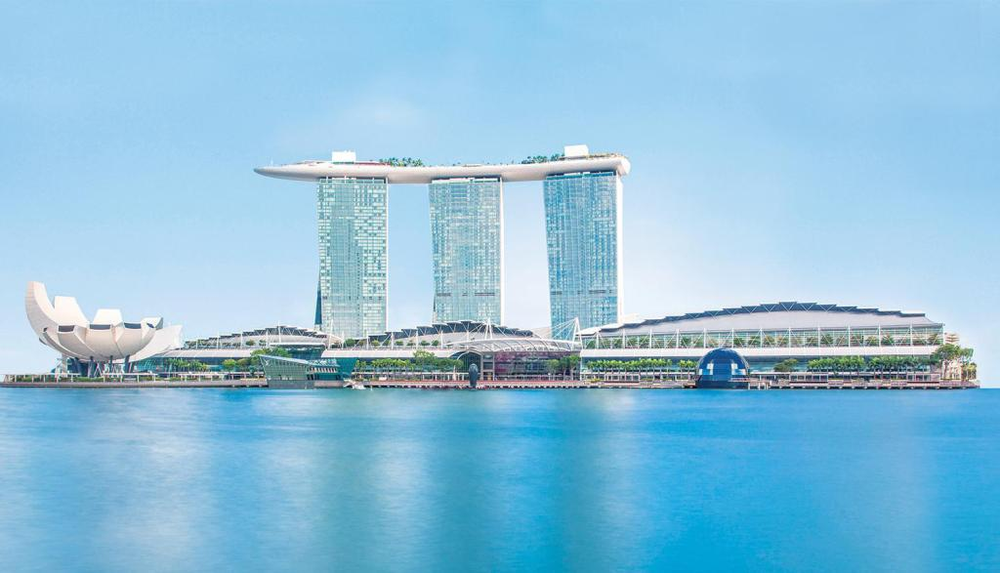
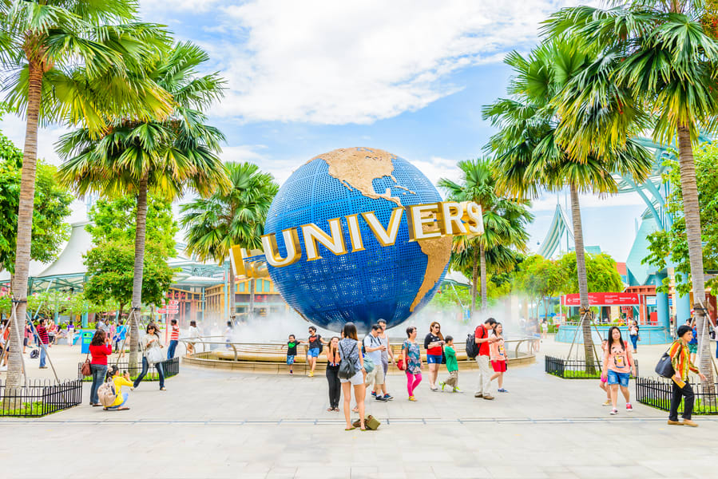
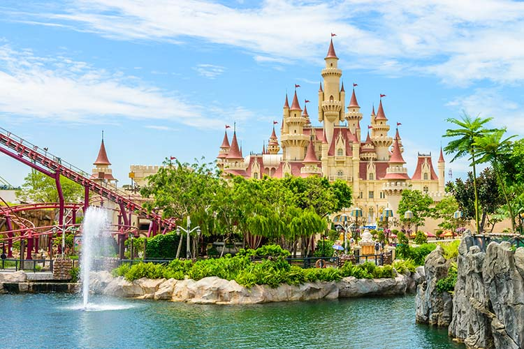
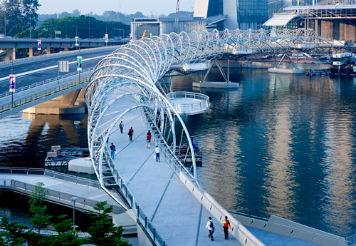
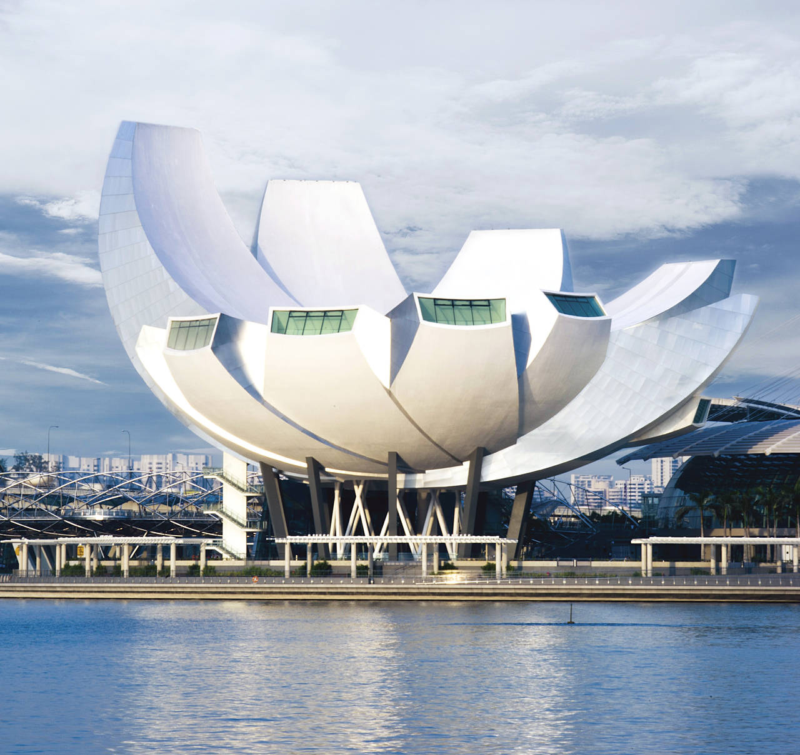
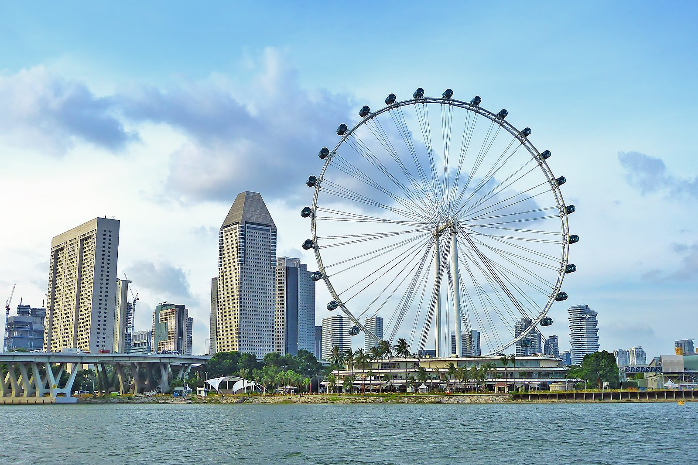
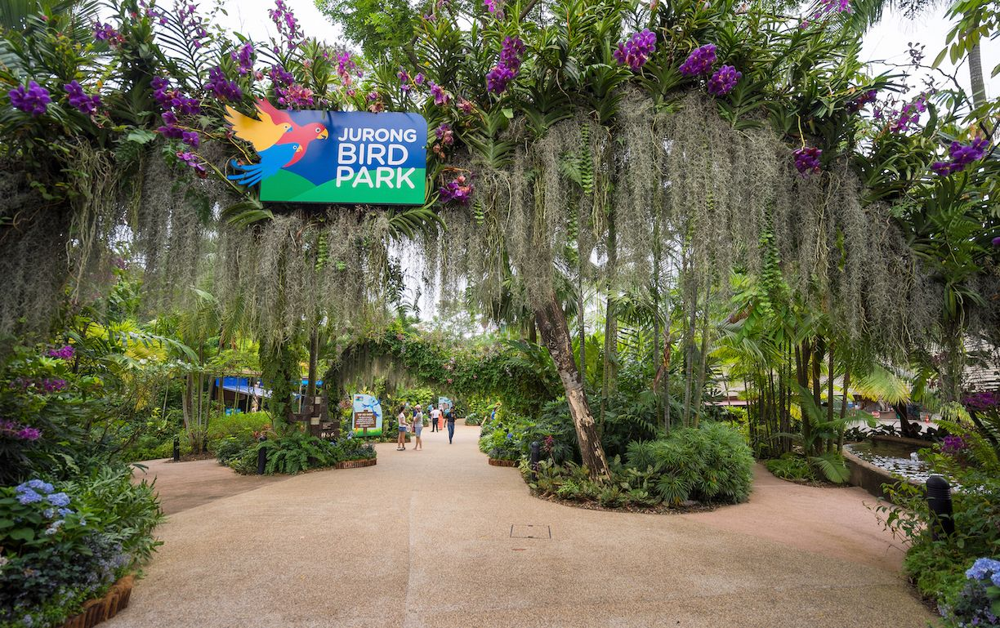

|
|
Best Place To Visit In Singapore
Marina Bay Sands
|  | Marina Bay Sands is an integrated resort fronting Marina Bay in Singapore. The resort is owned by the Las Vegas Sands Corporation and at its opening in 2010, it was deemed the world's most expensive standalone casino property at S$8 billion.The resort includes a 2,561-room hotel, a 120,000-square-metre convention-exhibition centre, the 74,000-square-metre The Shoppes at Marina Bay Sands mall, a museum, a large theatre, "celebrity chef" restaurants, two floating crystal pavilions, art-science exhibits, and the world's largest atrium casino with 500 tables and 1,600 slot machines |
Gardens by the Bay
The Gardens by the Bay is a nature park spanning 101 hectares in the Central Region of Singapore, adjacent to the Marina Reservoir.The park consists of three waterfront gardens: Bay South Garden, Bay East Garden and Bay Central Garden.Its Flower Dome is the largest glass greenhouse in the world.Gardens by the Bay was part of the nation's plans to transform its "Garden City" to a "City in a Garden", with the aim of raising the quality of life by enhancing greenery and flora in the city. |
 |
Merlion
 |
Merlion Park is a famous Singapore landmark and a major tourist attraction, located at One Fullerton, Singapore, near the Central Business District. The Merlion is a mythical creature with a lion's head and the body of a fish that is widely used as a mascot and national personification of Singapore.Two Merlion statues are located at the park. The original Merlion structure measures 8.6 meters tall and spouts water from its mouth. It has subsequently been joined by a Merlion cub, which is located near the original statue and measures just 2 metres tall. |
Universal Studios
Universal Studios Singapore is a theme park located within the Resorts World Sentosa at Sentosa, Singapore. It features 28 rides, shows, and attractions in seven themed zones. It is one of the six Universal Studios theme parks around the world. It is the second Universal Studios theme park in Asia, the other being Universal Studios Japan in Osaka, and the first in Southeast Asia. |
 |
Sentosa Island
|  | Sentosa Island, known mononymously as Sentosa, and formerly Pulau Belakang Mati, is an island located off the southern coast of Singapore's main island. The island is separated from the main island of Singapore by a channel of water, the Keppel Harbour, and is adjacent to Pulau Brani, a smaller island wedged between Sentosa and the main island. The island was renamed Sentosa and was planned to be a popular tourist destination.It is now home to a popular resort that receives more than twenty million visitors per year. |
Helix Bridge
The Helix Bridge, officially The Helix, and previously known as the Double Helix Bridge, is a pedestrian bridge linking Marina Centre with Marina South in the Marina Bay area in Singapore.It is located beside the Benjamin Sheares Bridge and is accompanied by a vehicular bridge, known as the Bayfront Bridge.The entire bridge was opened on 18 July 2010 to complete the entire walkway around Marina Bay. |
 |
ArtScience Museum
|  | ArtScience Museum is a museum within the integrated resort of Marina Bay Sands in the Downtown Core of the Central Area in Singapore.It is the world's first ArtScience museum, featuring major exhibitions that blend art, science, culture and technology. Although a permanent exhibition at the ArtScience Gallery has been planned, the Museum mainly hosts touring exhibitions curated by other museums. |
Singapore Flyer
The Singapore Flyer is an observation wheel at the Downtown Core district of Singapore. Officially opened on 15 April 2008, it has 28 air-conditioned capsules, each able to accommodate 28 passengers, and incorporates a three-story terminal building. The flyer has made numerous appearances in media and popular culture that features Singapore. |
 |
Jurong Bird Park
|  | Jurong Bird Park is an aviary and tourist attraction in Jurong, Singapore. The bird park covers an area of 0.2 square kilometres on the western slope of Jurong Hill, the highest point in the Jurong region. It is one of the parks managed by Mandai Wildlife Reserve the makers of Singapore Zoo, Night Safari and River Wonders. |